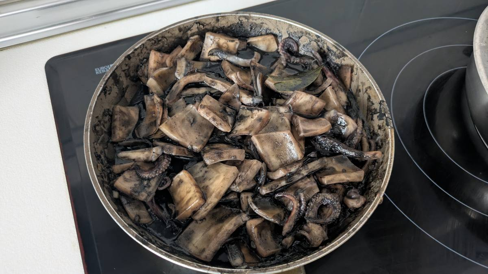
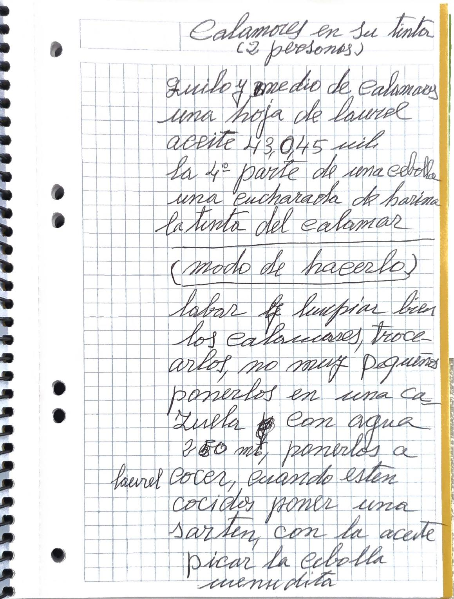
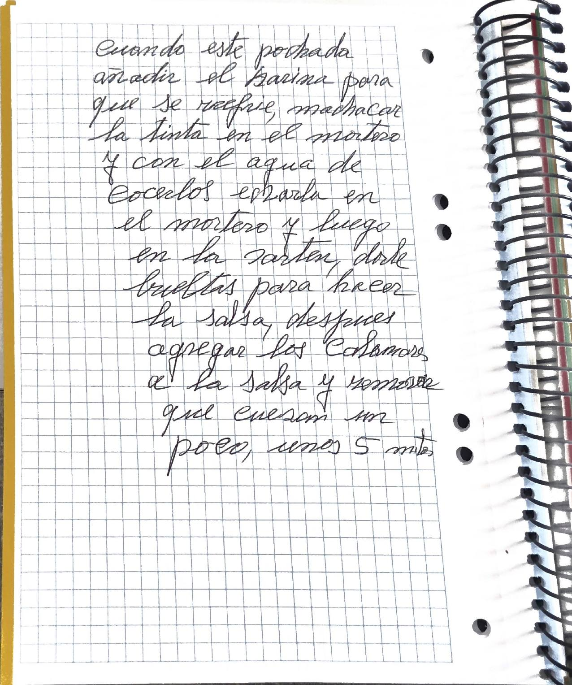
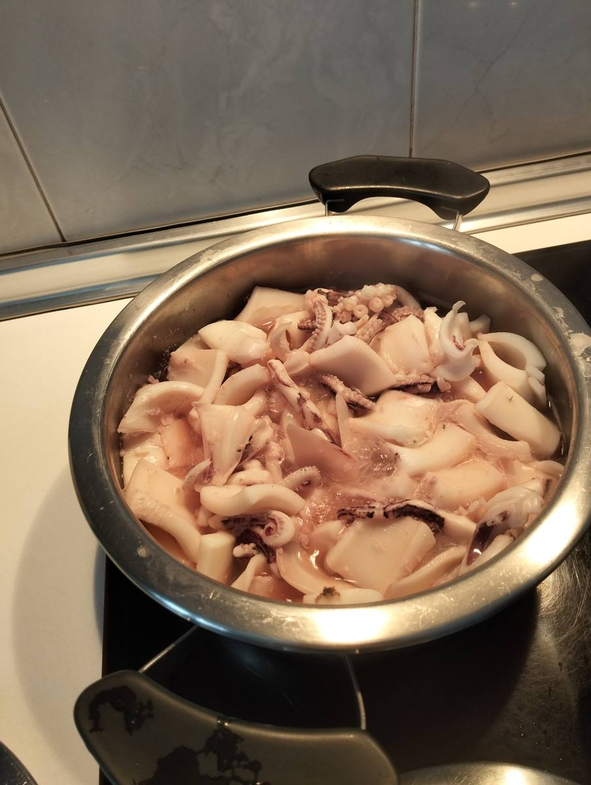
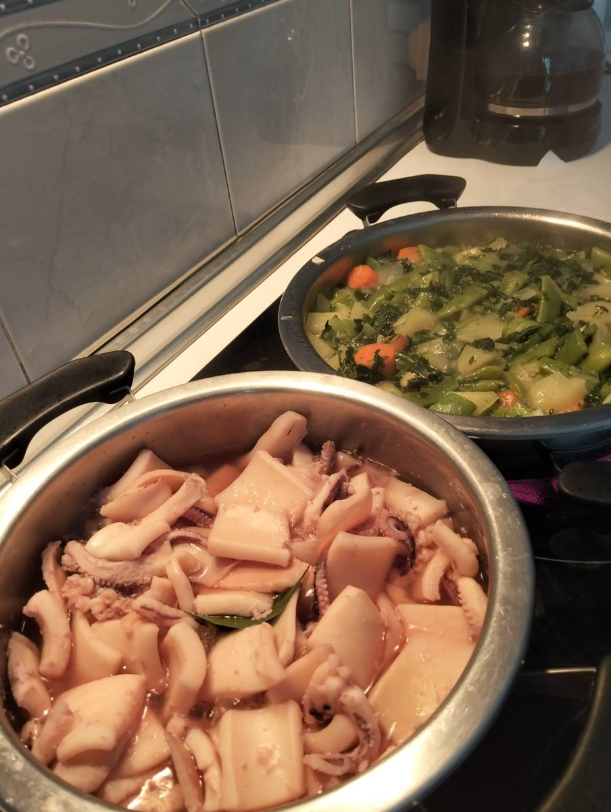
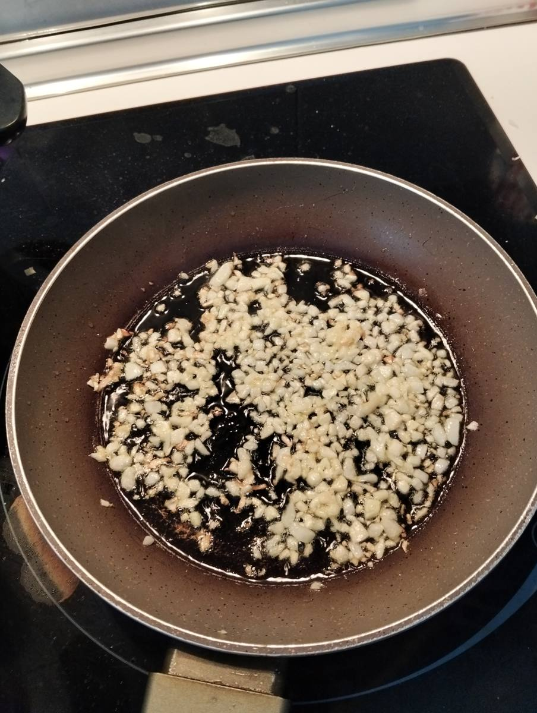
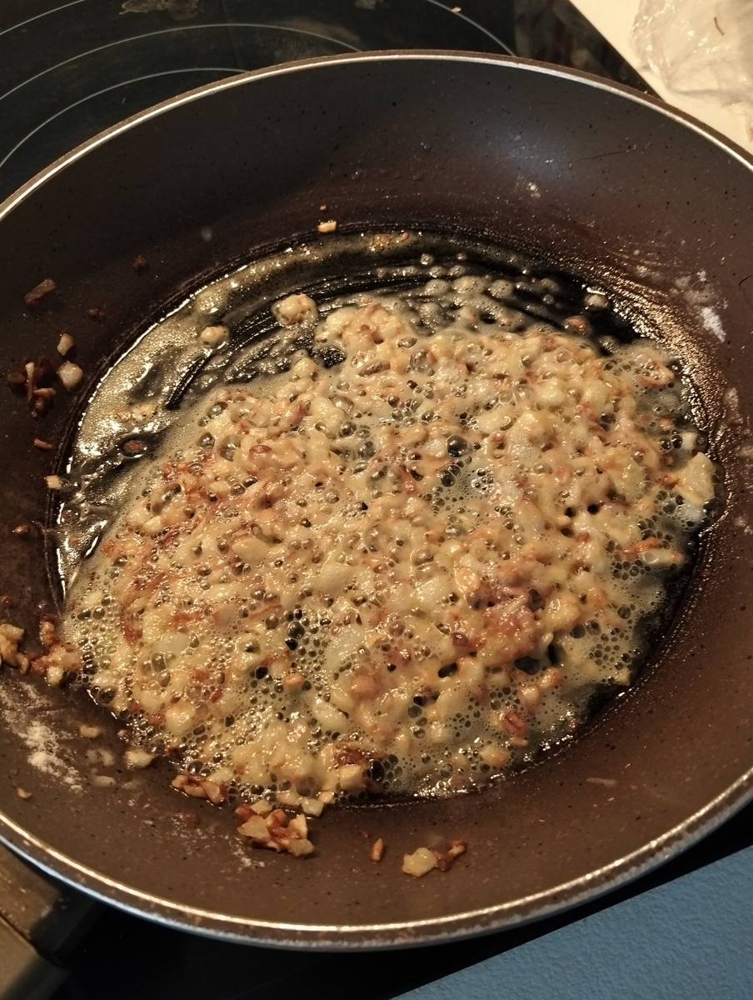
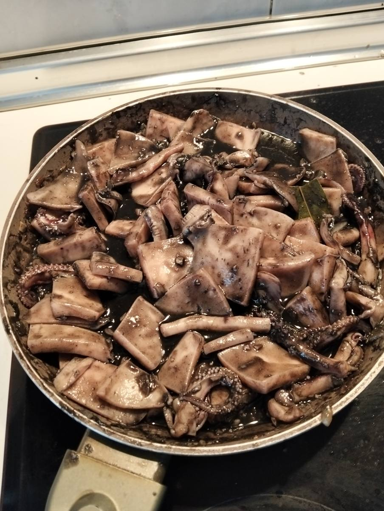
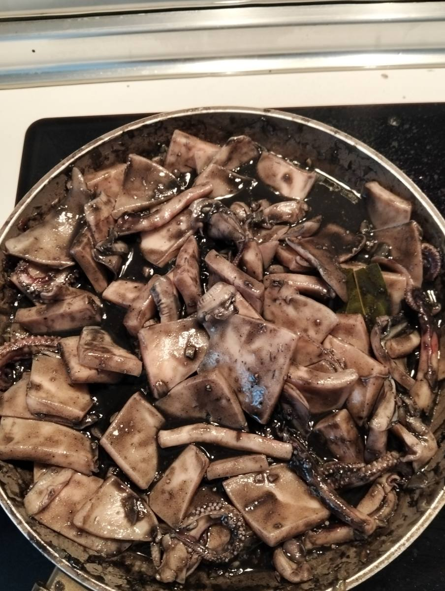

Versión editada para cocinar. Lo que ella escribió, palabra por palabra, está en «Cuaderno».


Transcripción fiel, con su ortografía. Lo que va entre corchetes son aclaraciones de la transcripción.
Calamares en su tinta (2 personas)
kilo y medio de calamares una hoja de laurel aceite 43, o 45 ml. la 4º parte de una cebolla una cucharada de harina la tinta del calamar
(modo de hacerlo)
labar y limpiar bien los calamares, trocearlos, no muy pequeños ponerlos en una cazuela [palabra tachada] con agua 250 [la cifra del medio está escrita encima de otra; Raul confirma 250] ml, ponerlos a cocer, cuando esten cocidos poner una sarten, con la aceite picar la cebolla menudita cuando este pochada añadir el harina para que se refrie, machacar la tinta en el mortero y con el agua de cocerlos echarla en el mortero y luego en la sarten, darle bueltas para hacer la salsa, despues agregar los Calamares a la salsa y remover que cuezan un poco, unos 5 mtos
laurel





